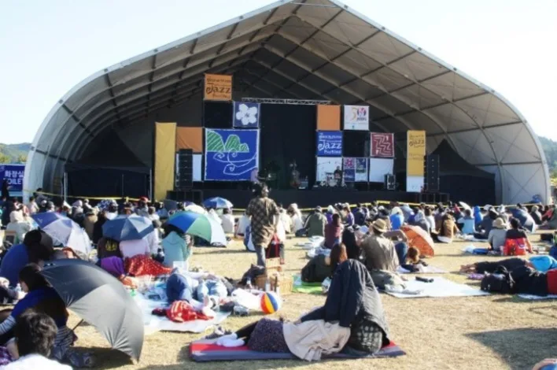
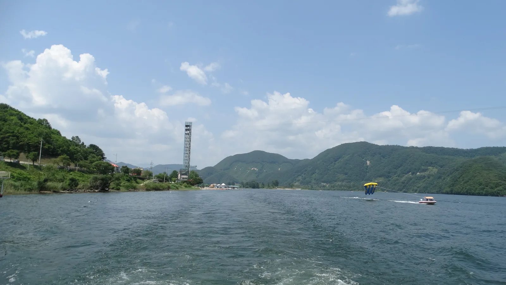
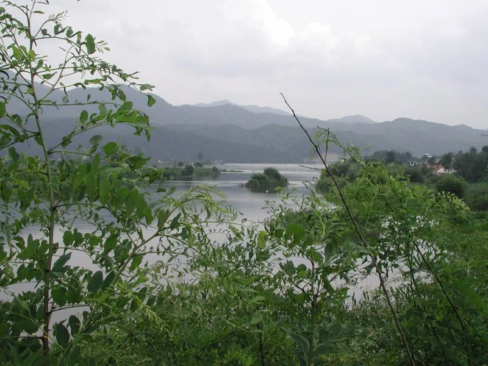
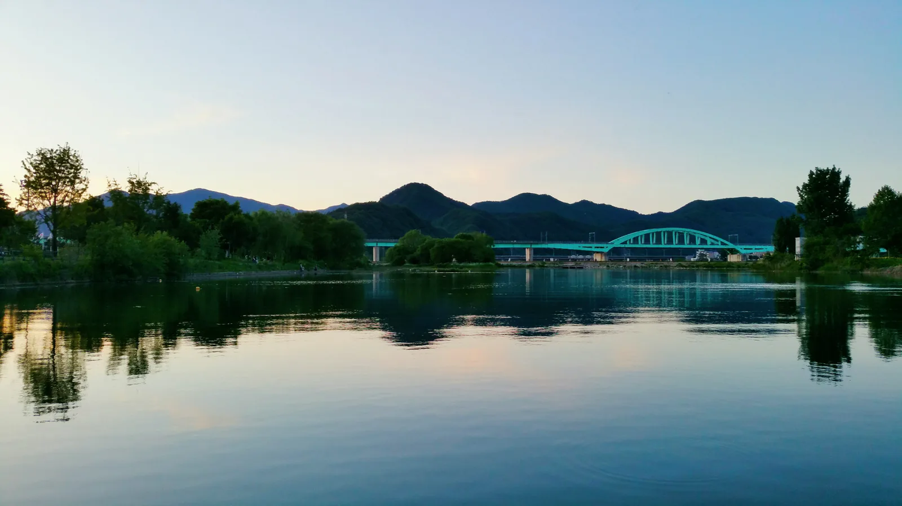
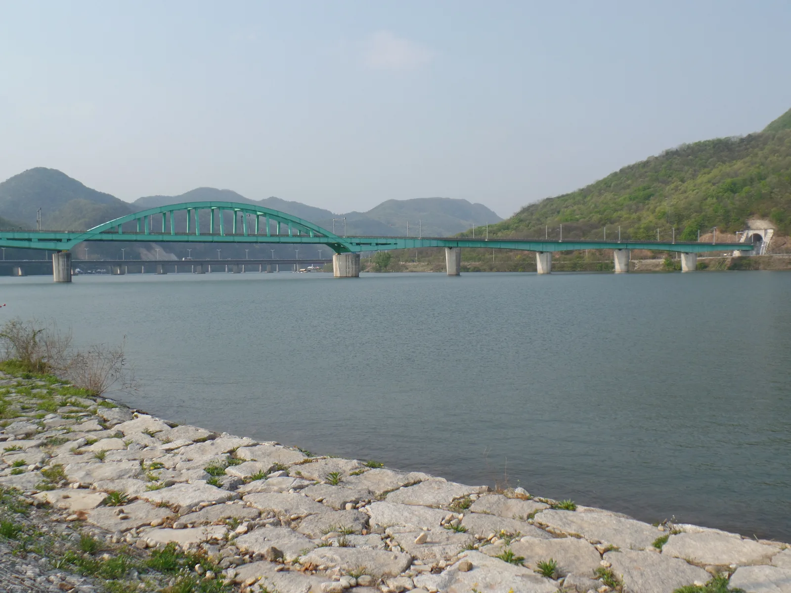
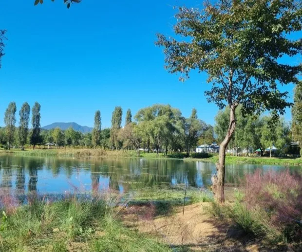
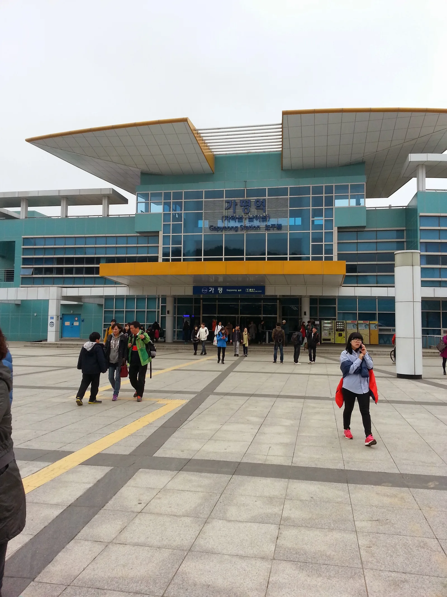
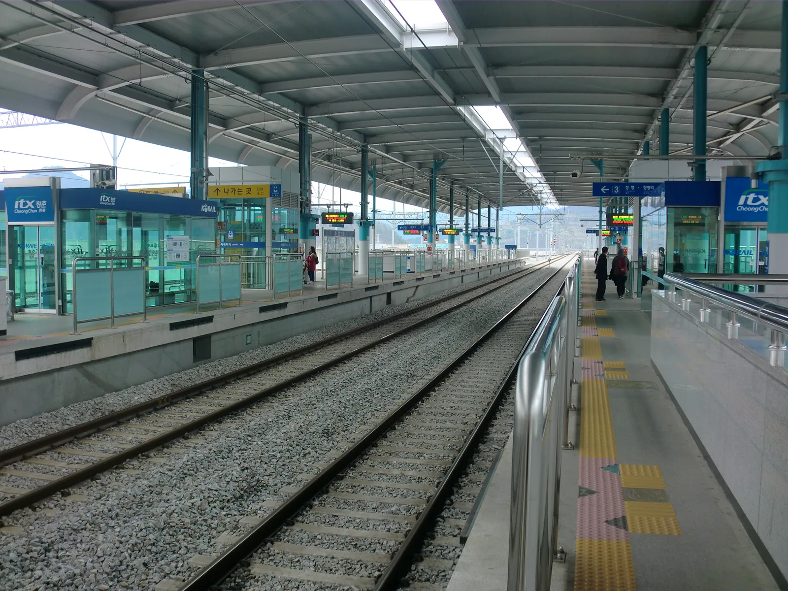

▲ 자라섬국제재즈페스티벌 야외 공연장. 축제 기간 섬 안쪽은 도보로만 이동할 수 있다 ⓒ Wikimedia Commons (CC BY-SA 2.0 KR)
2026 자라섬재즈페스티벌이 10월 9일(금)부터 11일(일)까지 사흘간 경기 가평 자라섬에서 열린다. 이 축제에서 자차 이용자가 가장 먼저 알아야 할 규칙은 하나다. 축제 기간 동안 자라섬 안으로는 차가 들어갈 수 없다. 섬이라는 지형 자체가 하회마을처럼 차량 진입을 원천적으로 막는 구조를 만든다.
1. 섬이라서 생기는 원천적 제약

▲ 같은 북한강 수계의 남이섬(참고 이미지). 자라섬도 이와 같은 하중도 지형이라 차량 진입에 물리적 제약이 크다 ⓒ Wikimedia Commons
자라섬은 북한강 위에 떠 있는 하중도다. 다리로 육지와 연결돼 있어 평소에는 자차로 드나들 수 있지만, 축제처럼 대규모 인파가 몰리는 기간에는 이 다리 자체가 병목이 된다. 주최 측은 이 문제를 아예 차량 통행 자체를 막는 방식으로 해결한다. 자차를 가져가더라도 지정된 외부 주차장에 세우고 걸어서 들어가야 하는 구조다.

▲ 가평을 감싸고 흐르는 북한강. 자라섬은 이 강 위에 떠 있는 하중도라 다리가 유일한 진입로다 ⓒ Wikimedia Commons (CC BY-SA 3.0, Erich Iseli)
2. 서울에서 간다면 — 사전예약 셔틀

▲ 가평의 철교와 강변 풍경. 자라섬은 가평읍 인근 북한강 위에 있다 ⓒ Wikimedia Commons (CC0)
| 이동 수단 | 내용 |
|---|---|
| 전용 셔틀버스 | 서울(합정역·종합운동장역 등) ↔ 자라섬, 편도 15,000원, 사전예약제 |
| 대중교통 | ITX-청춘·경춘선으로 가평역 이동 후 도보 약 15분 |
| 자차 | 지정 외부 주차장에 주차 후 도보 이동(섬 내부 진입 불가) |
주최 측이 운영하는 셔틀버스는 사전예약제로, 편도 요금이 1만 5,000원이다. 이 셔틀을 이용하면 주차 문제 자체를 피할 수 있다는 장점이 있다. 다만 예약 인원이 제한되므로 티켓 예매와 함께 셔틀 예약도 서두르는 것이 좋다.

▲ 경춘선 가평역 인근 철교. ITX-청춘·경춘선 열차가 이 다리를 건너 가평역에 닿는다 ⓒ Wikimedia Commons (Public Domain)
3. 대중교통이 가장 속 편한 선택일 수 있다

▲ 자라섬 내부의 꽃정원. 재즈페스티벌 기간이 아니라면 평소엔 자차로도 접근할 수 있는 공간이다 ⓒ Wikimedia Commons (CC BY-SA 2.0 KR)
참고 가평역은 자라섬에서 도보로 약 15분 거리다. ITX-청춘이나 경춘선 전철로 접근하면 주차나 셔틀 예약 걱정 없이 축제장에 도달할 수 있다. 다만 공연이 끝나는 늦은 밤 시간대에는 열차 배차 간격을 미리 확인해두는 것이 안전하다.

▲ 경춘선 가평역 외관. 여기서 자라섬까지는 도보로 약 15분 거리다 ⓒ Wikimedia Commons (CC BY-SA 3.0, Himuka tachibana)
자차로 근처까지 이동한 뒤 가평역 인근 주차장에 세우고 도보나 셔틀로 갈아타는 조합도 현실적인 방법이다. 어떤 경로를 택하든 핵심은 같다. 자라섬 안쪽까지 차로 들어갈 수 있다는 기대는 접어야 한다는 것이다.
4. 정리
체크포인트
- 축제 기간 자라섬 안으로 자차 진입은 불가능하다.
- 지정 외부 주차장 + 도보, 전용 셔틀(편도 1만 5,000원), 가평역 도보 15분 중 하나를 선택해야 한다.
- 셔틀은 사전예약제이므로 티켓 구매와 함께 미리 예약해야 한다.
- 3일권은 16만 5,000원(얼리버드 한정)이다.

▲ 가평역 승강장. 공연이 늦게 끝나는 날에는 막차 시간을 미리 확인해두는 것이 안전하다 ⓒ Wikimedia Commons (CC BY-SA 3.0, hyolee2)